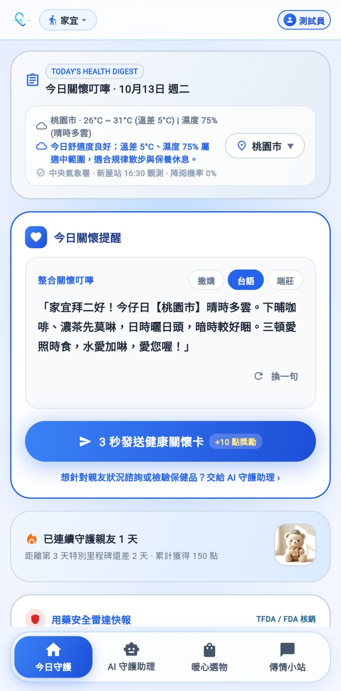
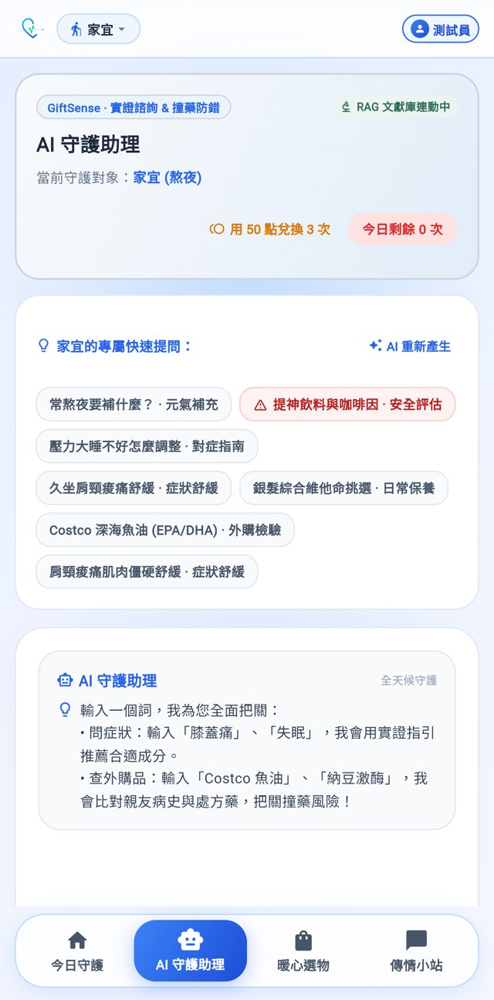
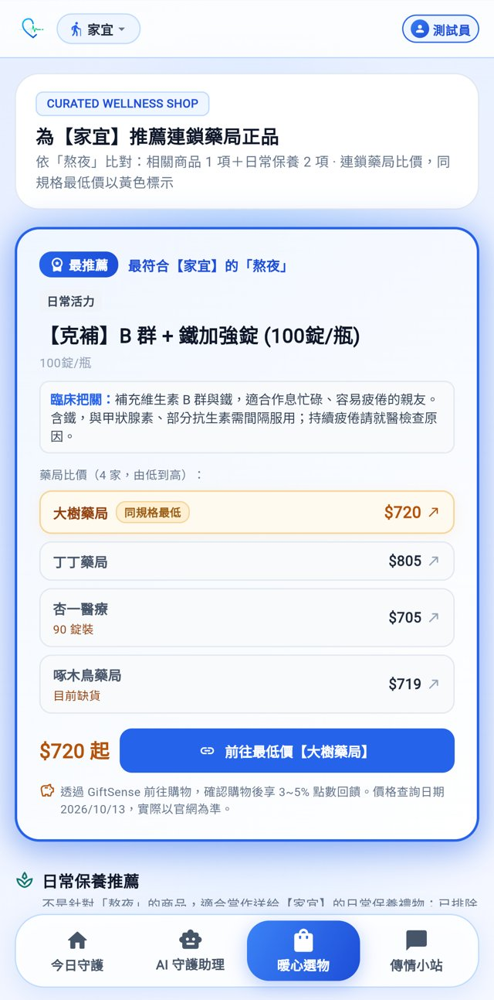
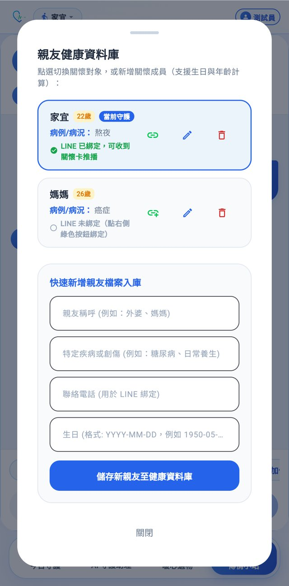
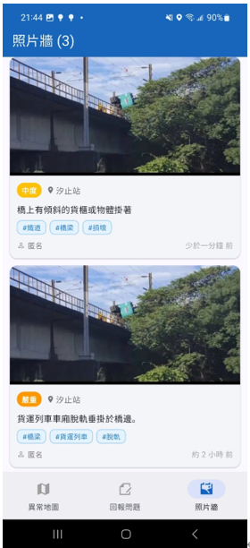
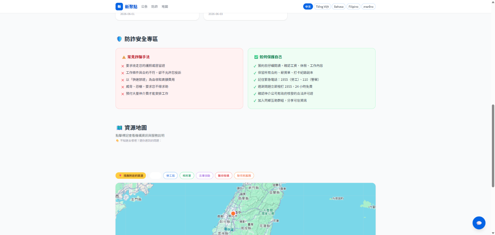
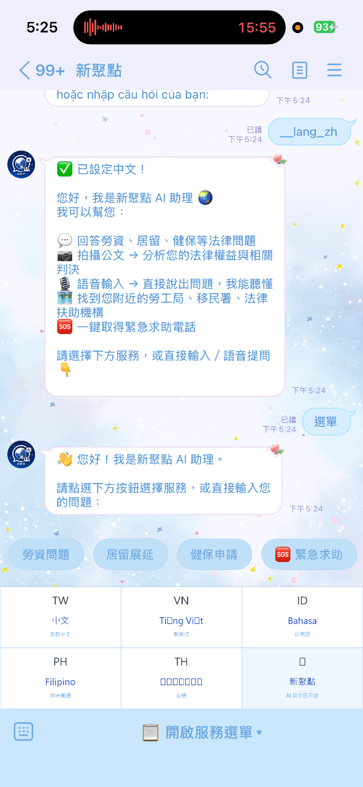
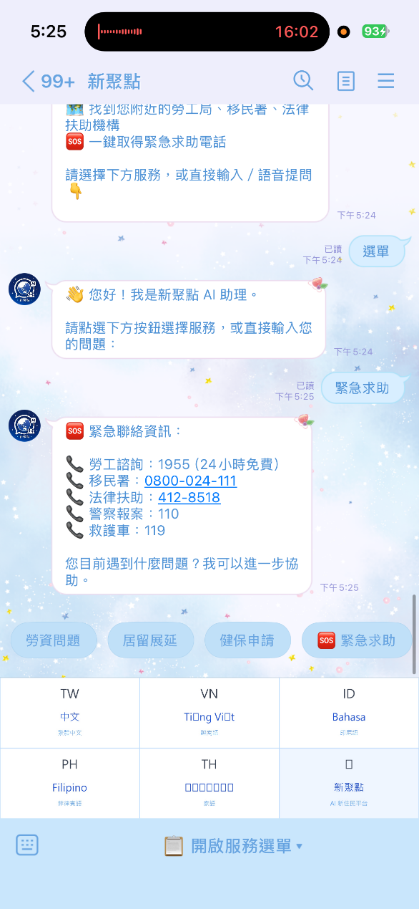
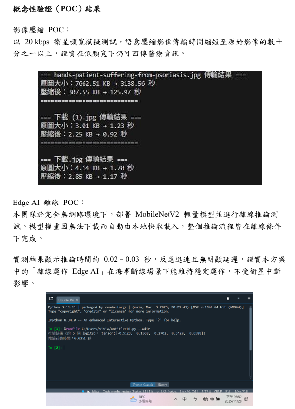
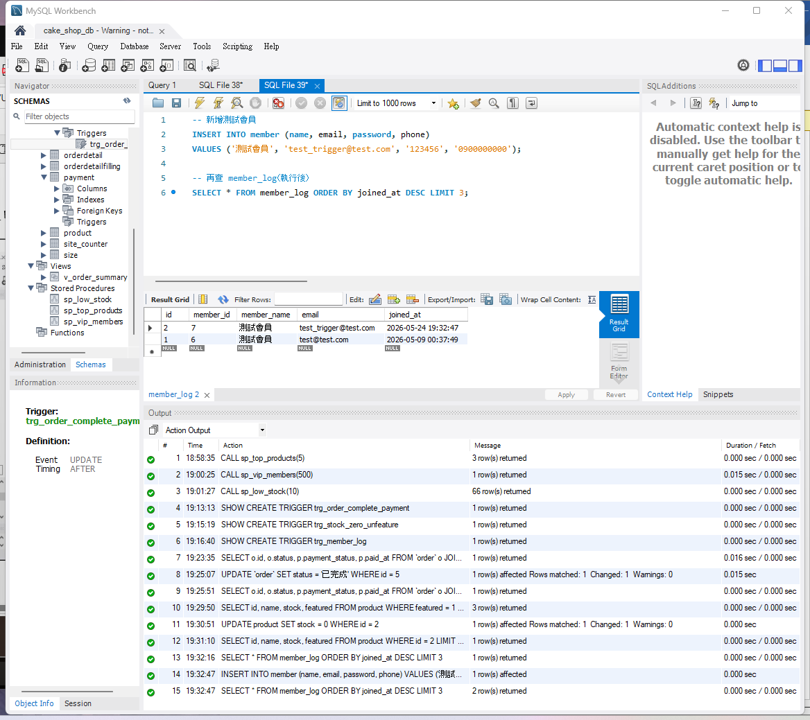

PORTFOLIO
從聽懂需求開始，
把想法做成能用的系統。
我是楊紫筠，中原大學資訊管理學系大四，輔修財經法律。大學期間做過多個專題，大多擔任組長，負責需求分析、系統規劃、帶領開發到上台報告。這裡整理了其中幾個。
01 · 畢業專題 · 2026
GiftSense 心意，醫觸即達
子女想送保健品關心長輩，卻不知道會不會跟長輩吃的藥衝突。GiftSense 在推薦商品之前，先用實證文獻和交互作用規則比對長輩的病況與用藥，確認安全才推薦，並透過 LINE 每天送出關懷卡。
Flutter · Python FastAPI · RAG · LINE Messaging API · 中央氣象署 API




02 · 軟體專案管理課程 · 2026
鐵道守護眼
民眾看到鐵道異常時拍照回報，系統用 GPT-4o Vision 判斷狀況，並結合台鐵官方 TDX 資料，把回報即時標在地圖上，再轉成維修工單。
Flutter · GPT-4o Vision · Firebase · Google Maps · TDX API




03 · 資訊管理課程 · 2026
新聚點 AI 智慧新住民服務平台
給新住民與外籍移工用的多語言資訊平台。透過 LINE Bot 就能用語音發問、查政策公告、在地圖上找附近資源，介面支援中、越、印尼、菲律賓、泰語。
LINE Bot · Flask · Whisper 語音辨識 · 多語言介面






04 · 2025 衛星數位應用創新大賽
海事智醫鏈 MediLink-Sea
遠洋船員生病時，船上網路頻寬很低，醫療影像傳不出去。提出結合衛星通訊、Edge AI 與 IoT 生理量測的方案，讓船上能先做初步判讀，再把壓縮後的資料傳回岸上。實測壓縮後的影像傳輸時間能縮短到原本的數十分之一。
Edge AI · 衛星通訊 · IoT · Python


05 · 網路程式設計 + 資料庫管理
CakeShop 手作蛋糕電子商店
完整的電商網站：商品搜尋、購物車、結帳扣庫存、留言板與後台管理，也做了 SQL Injection 防護。資料庫課的加強版另外用 Trigger 與預存程序處理庫存與訂單。
JSP · MySQL · Trigger · 預存程序




ABOUT
關於我
爸爸媽媽都在金融業的資訊部門工作，讓我很早就對金融業的資訊工作有興趣。除了資管的技術課程，我也修了經濟學、初級會計，並輔修財經法律，希望能從商業和法規的角度理解系統為什麼要這樣設計。
開發時我會善用 AI 工具加快速度，同時也在持續把程式基礎打穩。未來想往金融資訊與資安方向發展，規劃考取 ISO 27001 等資安證照。